Audiveris can be launched by two different means :
audiveris.bat and located
in the bin/ directory of
Audiveris.
$> <your-audiveris-install-directory>\bin\audiveris.bat [<arguments>]
run
target on the provided build.xml
file located in the root directory of Audiveris.
$> cd <your-audiveris-install-directory> $> ant run
The application needs a reference to its home folder. This reference is provided either by the system property named "audiveris.home" or, if the system property is not set, by the environment variable "AUDIVERIS_HOME" in that order. Note that both the launch script and the ant target take care of these definitions, so the user should not have to set them manually.
Since build.xml provides a target
named launcher which generates the audiveris
launcher based on the defined properties, it is
recommanded to first update these environment properties
(by editing the file
named build.properties in
the config/ directory) and generate
that launcher. Then, selecting either launching means will
use the same environment definitions.
Please refer to the
Audiveris Installation Manual for further details on
the customization and use of
the build.xml file.
Most of the time, there is no need for command-line arguments. They are useful when a batch mode (i.e. with no user interface) is required, or to set some parameters beforehand.
A comprehensive list of command-line arguments is available in the javadoc API of the Main class.
Here is a quick catalog of the various menu items, as found on Audiveris main user interface.
| Exit | Exit Audiveris application |
|---|
All these commands deal with the sheet at hand
| History | List the more recent sheet files you've loaded |
|---|---|
| Open Sheet | Select a file that contains a printed sheet of music. Most graphic file formats should be usable, provided the pixel info uses a grey scale of 256 values. |
| Close Sheet | Close the current sheet |
| Width Fit | Adjust the zoom ratio so that the sheet WIDTH is fully displayed in the window |
| Height Fit | Adjust the zoom ratio so that the sheet HEIGHT is fully displayed in the window |
| Dump all Sheets | Print on the output console the internal information kept about every currently loaded sheet |
| Scale Plot | Display histogram of run lengths for foreground (black) and background (white) pixels. This gives the general scale (interline value) of the sheet. Here is a scale plot example. |
| Skew Plot | Display histogram of measured slopes of longest horizontal sticks. This gives the angle to de-skew the image. Here is a skew plot example. |
| Line Plot | Display histogram of horizontal projections of black pixels. This indicates area for each staff line. Here is a line plot example. |
Launch the processing of a step on the sheet at hand
| <Any Step> | Select the target in this menu which lists in
order the defined processing steps, as
described in Sheet
class documentation. Note that you can only
move forward.
Direct access to any step is available from the navigation frame on the left of the window |
|---|
All these commands deal with the score part of the sheet at hand
| History | List the more recent score files you've written |
|---|---|
| Open Score | Select a score file for reading. A score file contains in a binary proprietary format the information built while processing the original sheet. Re-loading such a score file saves you the initial processing, when getting back to the final steps |
| Save Score | Save the current information about the current score, for potential later reload |
| View Score | Display and browse the hierarchical information about the current score |
| Dump Score | Print main score information on the output console |
| Dump all Scores | Dump information about every score currently loaded |
| Shape Colors | Select the color display for each recognized shape |
|---|---|
| Training Material | Verify and potentially discard glyph material used to train the evaluators |
| Trainers | Launch and monitor the training phases of the evaluators |
| Memory | Display the current memory occupancy |
| Options | Set the various parameters used by Audiveris software |
| About | Display information about Audiveris version and related web-site |
|---|
To present the various operations, and the related user interface, we'll use a tour based on the usual sequence of processing steps, since nearly every step has a related view
The following image represents the main window of user interface, just after a picture has been loaded
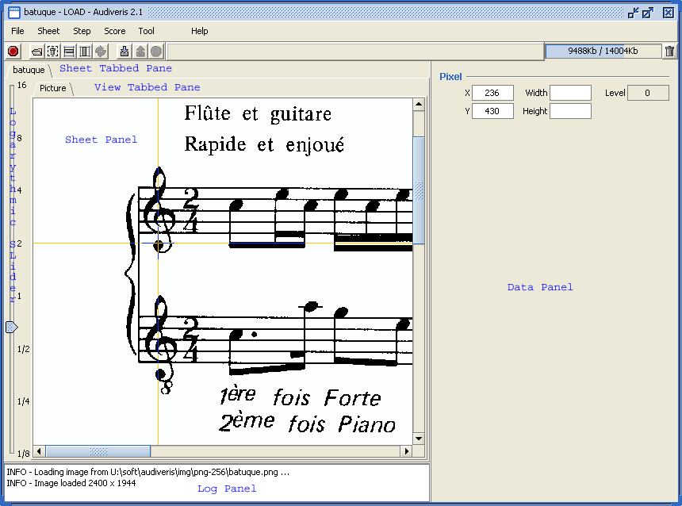The window is organized as follows :
In this example, we have a black and white image, so the grey level of the current pixel is either 0 (black foreground) or 255 (white background). The mouse is currently on a pixel of the C Clef, so the "Pixel" board of the data panel reports a 0 value for abscissa 236 and ordinate 430.
By dragging the mouse, while keeping the shift key pressed, we can define a rectangle. The x and y values are the coordinates of the upper left corner, and the width and height are the dimensions of the defined rectangular area.
This step aims at computing the general "scale" of the music sheet, which is basically the average vertical distance between two staff lines.
To do so, we use a very simple algorithm, based on vertical runs of foreground (black) pixels and vertical runs of background (white) pixels.
The black histogram gives the average line thickness, and the white histogram the white interval between two staff lines. The interline value is thus defined as the sum of these two values.
This step has no related sheet view. But, using the menu Sheet > Scale Plot, we get a separate chart as displayed below :
For this sheet example, the main interline value is thus 3 + 18 = 21 pixels. And this value will drive the computation of nearly all parameters used in the recognition process.
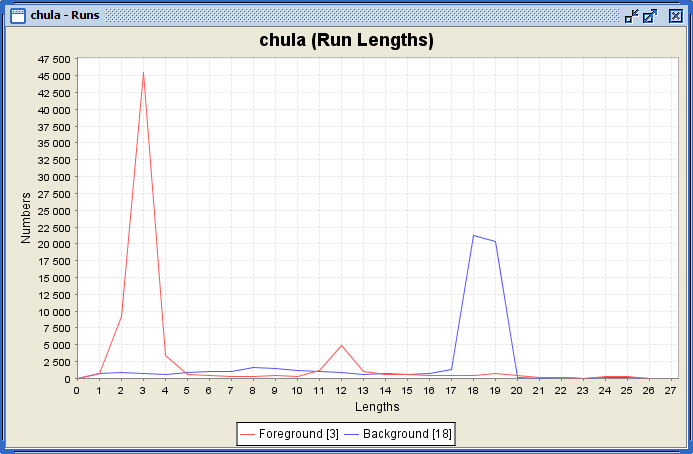The purpose of this step is to compute the average skew angle of the staff lines for the whole sheet. This of course is just an average value, since all staff lines may not be strictly parallel.
If the absolute value of the computed slope exceeds a given threshold, then the image is rotated (de-skewed) is the opposite direction, so as to ease the later detection of vertical and horizontal sticks.
We can display the sheet view related to the skew computation, as in the following picture. The "common" sections are colorized in colors close to green or blue, while the sections that compose the "significant" horizontal sections are colorized in red. We can notice that the staff lines are the main contributors to the long horizontal section.
Notice that the Data Panel exhibits two additional boards :
We can also get the following chart, by using the menu Sheet > Skew Plot :
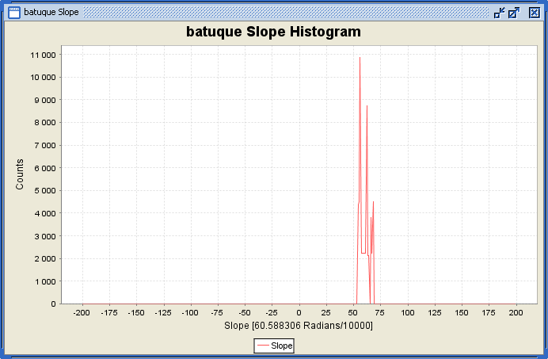This step is about staff lines, to properly detect all staff lines and "remove" them from the sheet.
The detection is driven by the horizontal projection of foreground (black) pixels. A dedicated chart, displayed from menu Sheet > Line Plot, makes this more obvious as can be seen on the following chart. We use a threshold (at roughly half the maximum histogram value, and indicated by a vertical red line on the chart), and every regular series of 5 peaks above this threshold defines the 5 stick areas supposed to contain one staff line each.
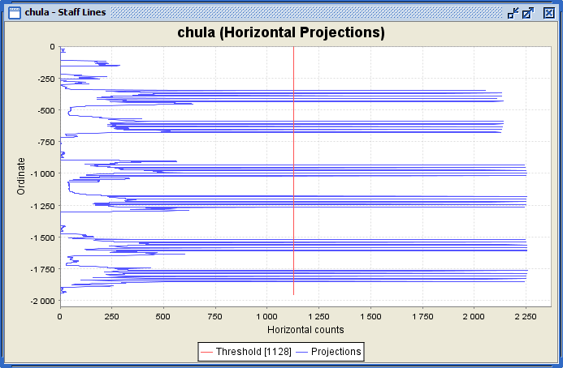The processing is then performed stick area per stick area. In such area, we retrieve the long horizontal sticks that compose the staff line.
The detected lines are then cleaned up : The underlying pixels are erased from the original picture, and a specific algorithm is used to extend crossing objects (objects that were overlaid upon the staff lines).
The cleaned data is visible on the following view, where former staff lines have been replaced by synthetic lines :

Note that we can use a toggle button to switch between :
Here is the toggle button :
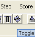Here is the display of retrieved staff lines :
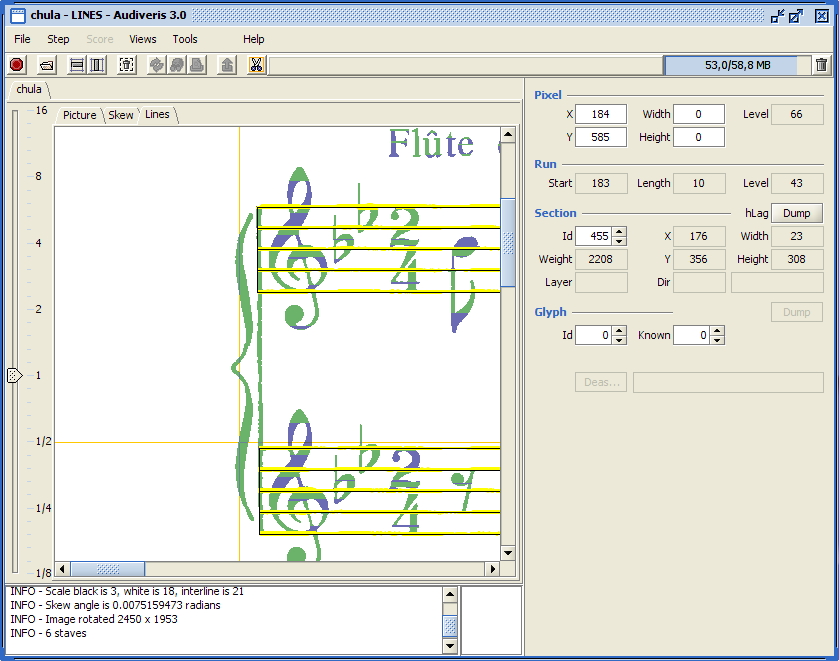Here are two zoomed view of details from the sheet, first the original staff line pixels, then the resulting data, where line pixels have been removed, and crossing objects have been carefully extended (note the extension goes until the synthetic staff line) :
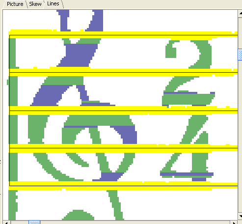 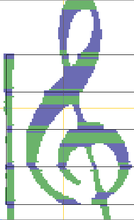This step retrieves and remove the horizontal sticks that are recognized as ledgers of alternate endings. The following figure shows that the ledger for a 'A' note has been removed and the two parts of the note head have been properly joined into one glyph (a black note head.

This step retrieves and does not remove the vertical sticks that are recognized as bar lines (either thick or thin bar lines). Notice in the following figure that the glyph of the bar line is properly assigned the shape name "THIN_BAR_LINE".
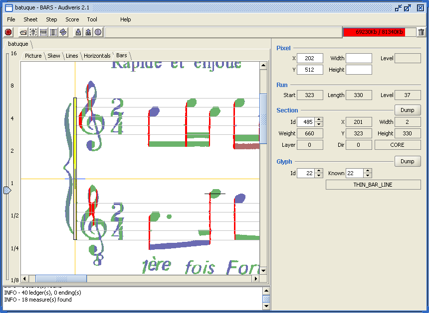In this step, browsing through the yet unassigned sections, we aggregate connected sections into symbol glyphs, and try to recognize these symbols. This of course works only for symbols with a rather fixed appearance, such as clefs or time signatures on the following picture, it does not work for constructions like notes with stem, chords, etc...
For example, we have correctly recognized "BRACE", "G_CLEF", "G_CLEF_OTTAVA_BASSA", "TIME_TWO_FOUR" and "DOT". Note that we also have mistaken some capital letters (F and P) with PIANO signs. To improve this, we'll need to better train the evaluators and/or properly isolate lines of text (lyrics or others).
The mouse is currently on the second clef, and notice that the two evaluators (called Neural and Regression) agree on acceptable interpretation (notified with green color) as a "G_CLEF_OTTAVA_BASSA".
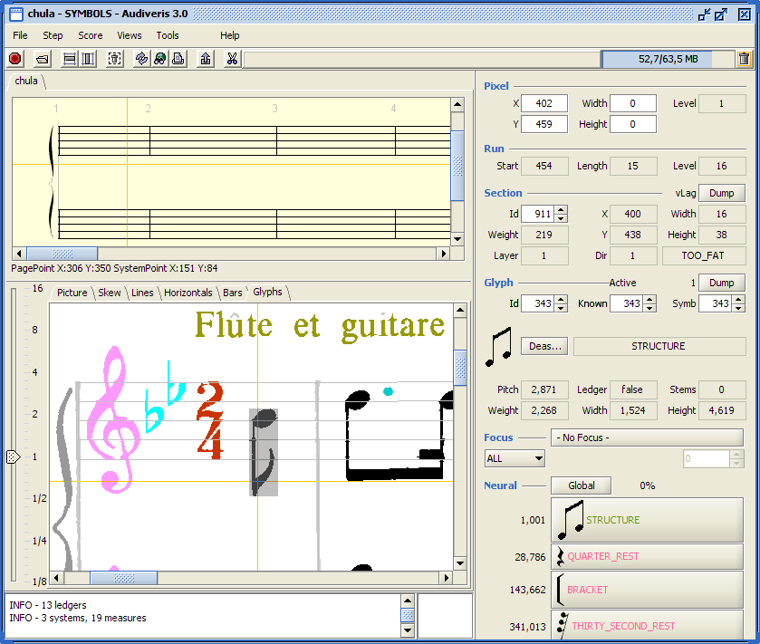This step focuses on non-recognized glyphs that may be the result of undesired segmentation. This frequently occurs because of staff line removal for symbols such as F clef or common time signature.
The algorithm used is to browse through all unknown glyphs, ordered by decreasing weight, and to try to aggregate neighbours that are other unknown glyphs of the same system. If the result of this combination leads to some recognized symbol, then we keep it as a (compound) glyph. Otherwise, we don't keep the compound.
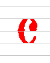The image above exhibits a segmented common time symbol : because of the staff line removal, the initial symbol had been segmented into 3 parts, and nothing has been recognized (everything is displayed in red color). The "symbols_compounds" step has aggregated 2 parts and the result has been recognized as a common sign, as displayed on the following image (notice the non-red color, that signals a recognized glyph).
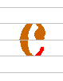There is an obvious limitation in the current algorithm, which deals only with 2-part compounds : we should be able to try more complex compounds (here, we typically need the ability to make a 3-part compound).
This step aims at retrieving all the vertical sticks which are either stems, or vertical parts of alternate endings. (Nota : just the stems are extracted for the time being).
The following image shows the various stems detected, displayed in yellow color, each stem with its bounding box, and main line.
Notice also that right pointing on a retrieved stem (or on just a candidate stem, still displayed in red) displays a "Filter" board with the detailed result of stem tests.
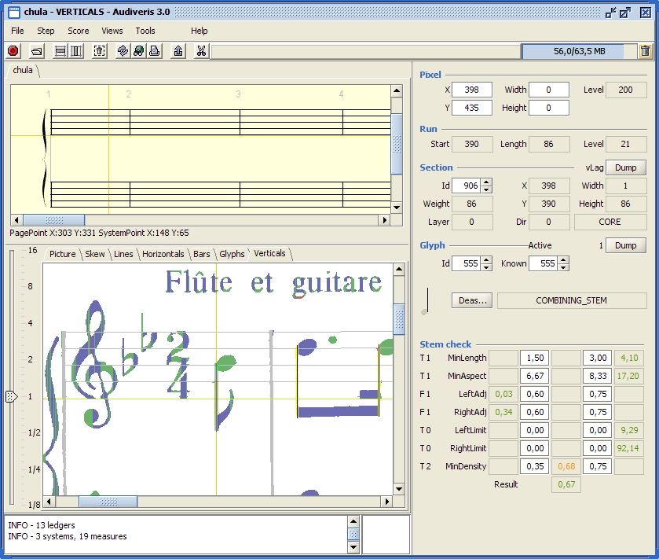If you select again the "Glyphs" view, you'll notice that the former red glyphs now have stems in yellow. Handling the "leaves" is the purpose of the next step.
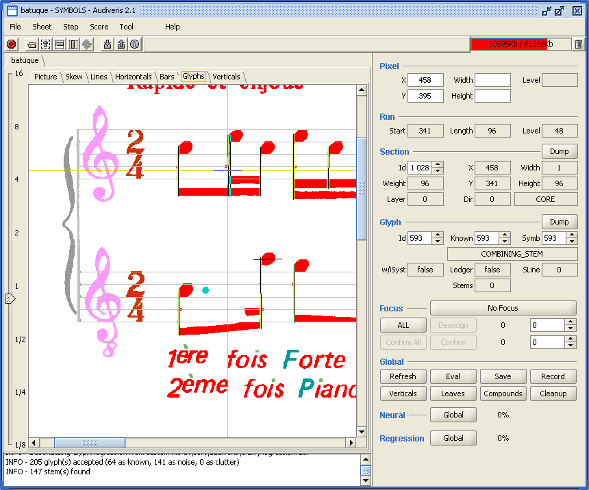The stem extraction has led to the creation of numerous "leaves", which we now try to assign a shape to. The "Leaves" step thus recognized all the individual leaves of the following image (most of the time, these leaves are note heads, or flags, or beams).
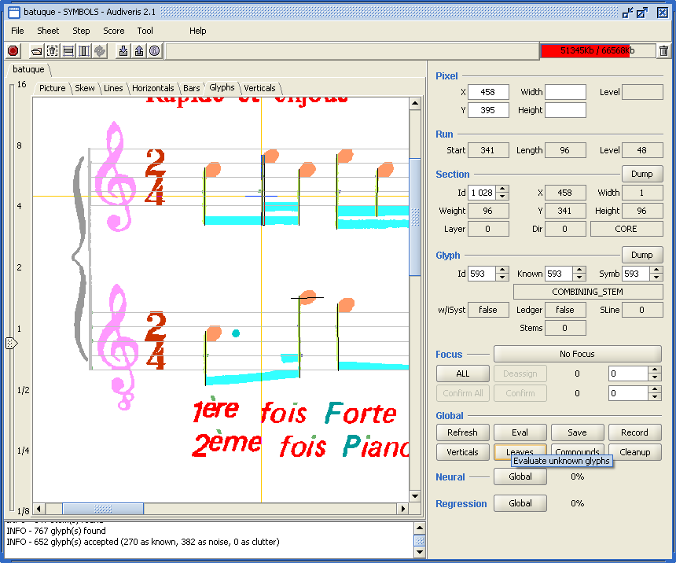Just like symbols, leaves may have been unduely segmented. So the apply another compound step, to recompose these leaves.
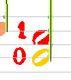The difference between the images above and below is the building of a compound, properly recognized as a void notehead.
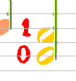This is a final cleaning up step, focused on wrong stems. For example, accidentals such as sharps, naturals or flats are symbols which actually contain one or two (small) stems. If these symbols are not recognized during the SYMBOLS step, then their stems are extracted and new leave glyphs are then tried, generally to no avail.
For the time being, we simply call these stems into questions. To do so, we try to cancel any stem which has no connected recognized leave. Then, we build new glyphs from these now unassigned sections. If we get to recognized glyphs, then we keep these glyphs, otherwise we "resurrect" the stems.
This interface is used to ease the setting of shape colors. It is a very basic interface, which gathers a typical color chooser with a selection for shape ranges and individual shapes.
The policy is to assign a color to a shape range. A shape range for example can be all note heads, or all rests. And by default, all shapes within the range are assigned the color of the range, unless of course we assign them a specific color.
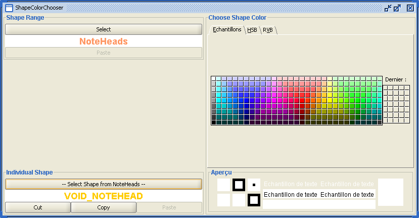The purpose of this item is to provide a user interface to review visually some or all of the various glyphs which are used for training the evaluators.
The main objective is thus to easily identify glyphs which have been assigned a wrong shape. Using them as part of the training base could bring serious damage in the performance of the evaluator(s). So the strategy, when such a wrong glyph has been identified, is simply to delete the glyph from the base.
Here is an example of the glyph verifier :
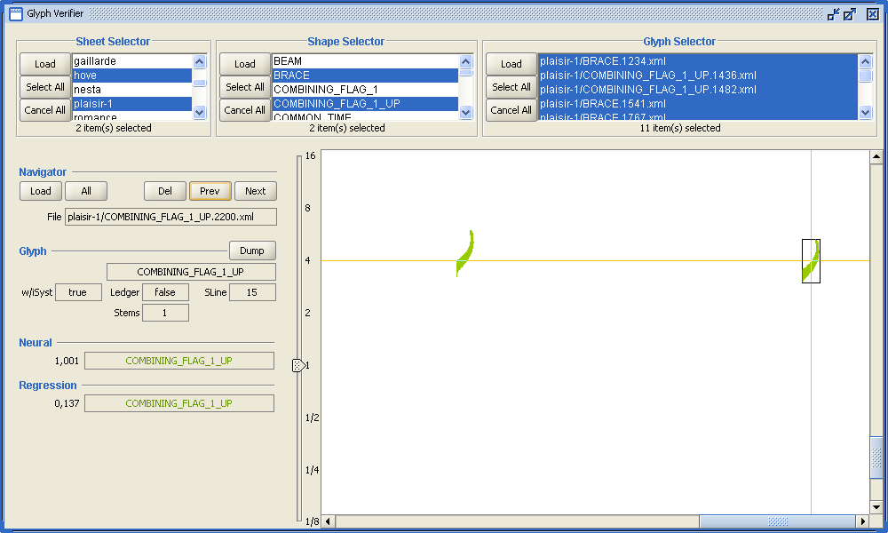The top panels are dedicated to selectors, in that order :
The large panel, on the lower right side, is dedicated to the display of the selected glyphs, using their own coordinates. Notice that glyphs that belong to separate sheets, can thus happen to have similar coordinates and thus be displayed as overlapping glyphs.
The lower left panel is composed of two main parts :
By default, this user interface looks for glyphs files under the /train/sheets directory. However, from the Trainers interface, you can ask to Verify glyphs (see that interface). In that latter case, the Training Material interface is automatically loaded with the corresponding glyphs, which may be part of either the whole glyph base (the default), or just the core glyph base.
This interface is dedicated to the proper training of the Neural Network evaluator. The display is as follows :
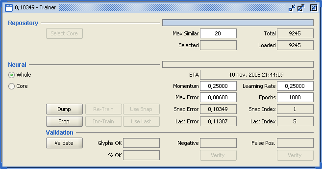To build the Core part out of the whole set of recorded glyphs, it suffices to define the maximum number of similar shapes (20 is a good guess) and press the "Select Core" button. The /train/core directory will be emptied and repopulated by the core selected glyph files.
This interface, accessible from Tool | Options, allows to interactively display and modify data related to Audiveris classes :
The display is a kind of JTreeTable, a combination of a tree on the left side, where the hierarchy of packages, subpackages and classes is displayed, and a table on the right side, where details of the containing classes are available for display and modification.
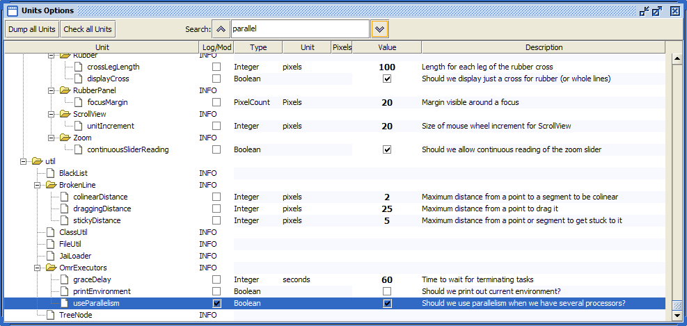The picture above represents a typical Options view :
There is a predefined list of types available for such constants (for details, please refer to the JavaDoc of class Constant) :
Another possible type is Scale.Fraction which is a double, whose unit is the interline value. For example, in a sheet with interline value of 20 pixels, a Fraction of 0.15 will represent 3 pixels. It's a way to express a length regardless of the actual sheet interline value. In the Options window, when such a Fraction value is displayed, its counterpart in pixels is also displayed provided that the current sheet has already had its scale computed. Otherwise, just a question mark is displayed. Please refer to details in Scale JavaDoc.
How do we define the current value of such logical constant ? The JavaDoc of class ConstantManager explains this mechanism in details. The sequence is defined as follows :